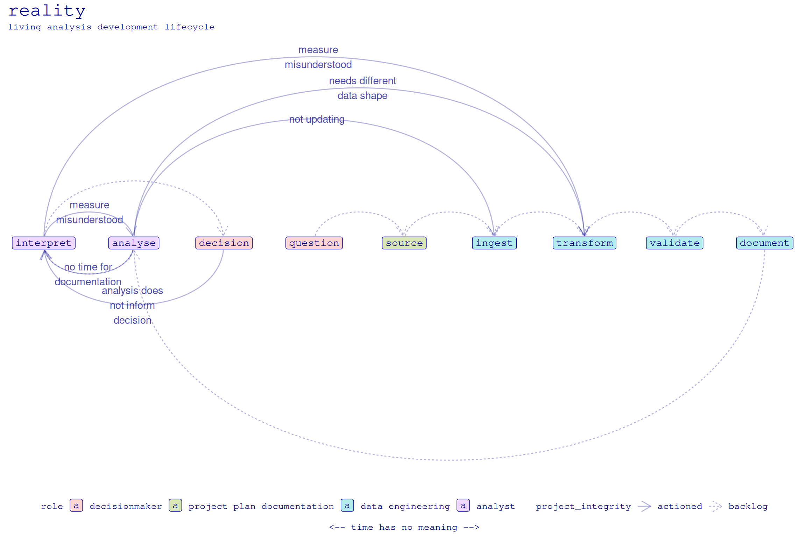
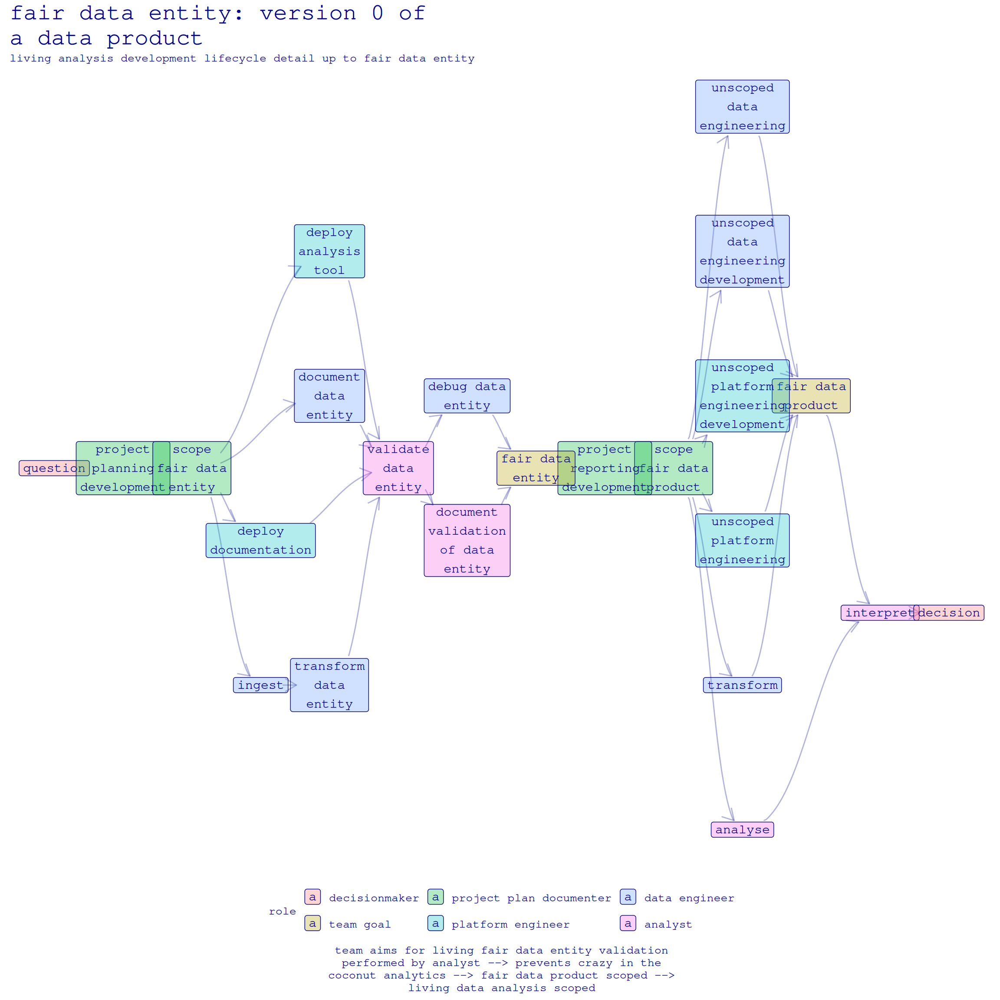

| Validation of Data Entity meets Minimum FAIR Criteria | |
|---|---|
| FAIR principle | Minimum requirements |
| Findable | Data documentation wherein columns & tables have descriptions for the data entity lineage. Clearly states access protocols; i.e., data security. Ensures subject matter experts can advise on governance, as well as contribute to validation. |
| Accessible | Understandable in terms of a data entity, a semantic abstraction in stakeholder terms (e.g., a number on an invoice). The helps ensure data governance is applied as subject matter experts advise. |
| Interoperable | Workflows to ensure data governance, security, and access function as intended when analysing data entity. Facilitates subject matter experts contributing to data validation. |
| Reusable | Requested data transformations provided in published layer of dedicated database, standard tests applied to data entity (see below for details) to confirm validity of documentated assumptions. |
Questionable Analytical Observations (QAO)
And what to do about them
Ceci n’est pas un datum
Any data engineer will tell you there’s a relentlessly comedic side to the industry, wherein confusion over what an observation is abounds, leading to unexpectedly large deviations from vision (Figure 1).
Those in the trenches of the modern data stack know this is why the community have developed principles, such as FAIR (“FAIR Principles. GO FAIR” n.d.), and open-source tools, such as DBT-core (“Dbt-Labs/Dbt-Core” 2025) that opinionate FAIR.
These engineers are also the first to tell you just how far from reality the industry is in realising even a fraction of those aspirations (Landi et al. 2020).
Something that tools such as DBT are beginning to intuit is that the governance of data must be an iterative workflow, not a policy checkbox at the end, such an aim is (we argue in a sister paper) chaotically impossible given how development plans morph and change.
We must correct for epistemic drift in the chaos induced by people and machines interoperating to answer scientific questions. Or, despite our best efforts, we end at the frontier psychiatry (Figure 2) of data science.
We begin declaritively, as engineers are busy and it’s good to give them a table of instructions on the second page so they can stop reading and go code something useful.
FAIR Data Entity - User Access Data Test
Definition: FAIR data entity test
- Analyst validates a single data point in their chosen tool.
- There is no requirement the validation passes the test.
Framing FAIR
The FAIR framing shown in Figure 3 is a way to communicate the black box of data to decision makers. In particular, this framing highlights the distinction between what they conceptualise as data (Can’t you just email me a spreadsheet?) and a data product brick in reusable data architecture that will save untold wages in the long run.
Minimal tests
The minimal set of tests show in Figure 4 for
- uniqueness
- missingness
- duplicates
allows for data platform development whilst demonstrating a good-faith roadmap to compliance for, say, the EU Comission’s Environmental, Social, and Governance reporting (ESG) (“Sustainable Finance - European Commission” n.d.).
| Tests Applied on Data Product Layers by Observability, Descending | ||
|---|---|---|
| Test | Tested | |
| Analytical Observation | ||
| output | unique key | data entity |
| Semantic Transformation | ||
| output | unique key | data entity joined across raw sources and tested |
| Source | ||
| output | unique key | data entity defined and tested |
| input | unique key | combination of columns that define a unique row |
| input | freshness | incrementation or snapshot field |
| input | not empty | table-level test |
| We say a unique key has been tested when the same combination of columns have not null and unique tests applied. | ||
| Freshness tests configurations: daily ingestion (warn > 1 day, error > 1 week); weekly ingestion (warn > 1 week, error > 2 weeks) | ||
It can be a challenge to communicate to leadership with little experinces of the trenches of data development the obstacles in scaling legacy data to living analyses. By setting these minimal goals, the problem solving is democratised from engineer to analyst.
We now turn to motivating1 the solution we just provided.
Expectation vs reality
Humans, bless ’em, are not great at conceptualising the black boxes they work with. A critical error we make is expecting a living analysis development lifecycle to reflect the workflow of an individual analyst producing a one-off report. Thus, living analysis development tends to have an expectation backbone (Figure 5), whether it be to produce a spreadsheet, some business intelligence dashboard, or deploy a machine learning algorithm by bespoke tooling.

Despite our best-laid agile plans, however, there’s an inevitable drift that occurs during the predictably unpredictable recursiveness of data development (Figure 6).

Democratising data development
Problem is, if you show the engineers FAIR criteria (“FAIR Principles. GO FAIR” n.d.), you will hear, sure, sure, next week.
“I’ve found it best not to do any documetation at all, otherwise people point out what’s missing.” – Real things i hear engineers say.
The reality is while data analytic question is reworked, there is little data engineers can know are true about the data. Schema are often non-existent. Because the
Datum confusion – placeholder title
Learnings – placeholder title
FAIR data entity tests on some projects. Matt, I thought we could track some projects do some vis here?
References
Landi, Annalisa, Mark Thompson, Viviana Giannuzzi, Fedele Bonifazi, Ignasi Labastida, Luiz Olavo Bonino da Silva Santos, and Marco Roos. 2020. “The ‘a’ of FAIR – as Open as Possible, as Closed as Necessary.” Data Intelligence 2 (1): 47–55. https://doi.org/10.1162/dint_a_00027.
Reiner, Rob. 1984. This Is Spinal Tap. Spinal Tap Prod., Goldcrest Films International.
The Avalanches. 2009. The Avalanches - Frontier Psychiatrist (Official HD Video). https://www.youtube.com/watch?v=qLrnkK2YEcE.
Footnotes
Contributor acknowledgement: Many thanks to the Data & AI team at TDCnet, Denmark, for contributions to test development and advisory discussions.↩︎